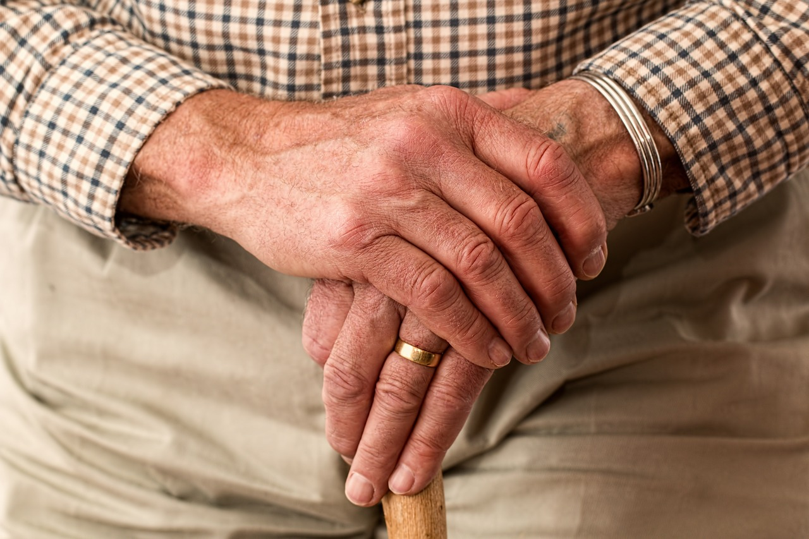

RACHEALTH Menjaga Hidup Sehat dan Berkualitas di Usia Lanjut
Platform ini dirancang khusus untuk membantu Anda menjalani hidup sehat di usia lanjut. Kami menyediakan informasi tentang kebutuhan gizi, tips gaya hidup, resep makanan sehat, dan panduan aktivitas fisik untuk mendukung kesehatan Anda secara menyeluruh.
Pentingnya Kesehatan di Usia Senja
Saat usia bertambah, tubuh mengalami berbagai perubahan: metabolisme melambat, massa otot berkurang, dan risiko penyakit meningkat. Nutrisi yang tepat dan gaya hidup sehat dapat membantu Anda tetap aktif, kuat, dan bahagia.
Pola Makan Seimbang untuk Lansia
Pola makan yang baik adalah fondasi kesehatan. Berikut ini panduan lengkap tentang kebutuhan nutrisi harian untuk orang tua:
Nutrisi Penting untuk Lansia:
1. Protein
- Manfaat: Membangun dan memperbaiki jaringan otot, mencegah sarkopenia.
- Sumber: Ikan, daging tanpa lemak, tahu, tempe, telur.
- Kebutuhan: 1–1,2 gram per kg berat badan.
2. Serat
- Manfaat: Memperlancar pencernaan dan menurunkan risiko penyakit jantung.
- Sumber: Sayuran hijau, buah-buahan, gandum utuh.
- Kebutuhan: 25–30 gram per hari.
3. Kalsium dan Vitamin D
- Manfaat: Menjaga kesehatan tulang dan mencegah osteoporosis.
- Sumber: Susu rendah lemak, yoghurt, keju, ikan sarden.
- Kebutuhan: 1.200 mg kalsium, 800 IU vitamin D per hari.
4. Omega-3
- Manfaat: Meningkatkan fungsi otak dan kesehatan jantung.
- Sumber: Ikan salmon, tuna, biji rami, kenari.
- Kebutuhan: 1.000 mg per hari.
Tips Pola Makan:
- Makan dalam porsi kecil namun sering untuk mempermudah pencernaan.
- Batasi konsumsi garam, gula, dan lemak trans.
- Minum minimal 8 gelas air setiap hari.